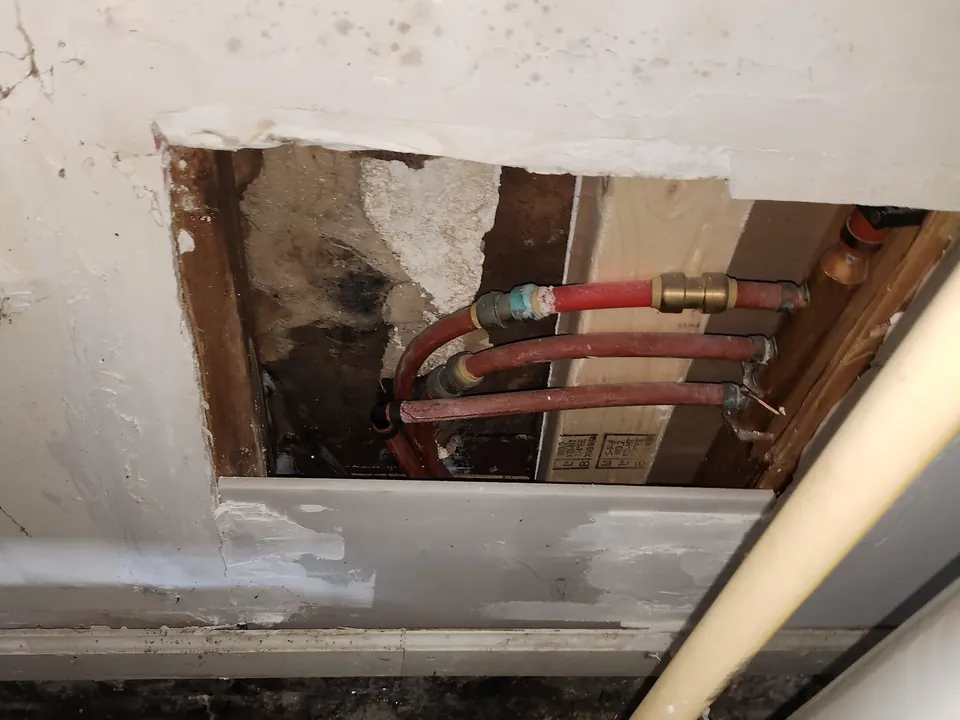

Water leaks in a commercial building can disrupt operations, damage property, increase utility costs, and create serious long-term structural issues. Angle Stop Plumbing provides dependable commercial leak repair services for businesses, property managers, industrial facilities, and multi-unit commercial properties that need fast diagnosis and effective solutions.
From visible pipe leaks to hidden plumbing issues behind walls, under slabs, or above ceilings, our team works quickly to identify the source and complete repairs that protect your building and help minimize downtime.
Schedule Commercial Leak Repair Here!
Trusted Commercial Leak Repair Services
Commercial plumbing systems are complex, and even a small leak can lead to expensive damage if it is not addressed quickly. At Angle Stop Plumbing, we provide commercial leak repair services tailored to the needs of business properties, including office buildings, restaurants, retail centers, apartment complexes, warehouses, medical facilities, and more.

Our experienced plumbers understand how to work efficiently in active commercial environments, helping businesses resolve plumbing issues while reducing disruption to staff, customers, tenants, and daily operations.
Our Commercial Leak Repair Services
Angle Stop Plumbing offers comprehensive leak detection and repair solutions for commercial plumbing systems.
Our services include:
- Water line leak repair for damaged or leaking supply lines
- Drain line leak repair for cracked, corroded, or failing drainage pipes
- Slab leak repair for leaks beneath concrete foundations
- Ceiling and wall leak repair caused by hidden plumbing failures
- Fixture and valve leak repair for sinks, toilets, urinals, shut-off valves, and commercial plumbing fixtures
- Pipe repair and replacement for worn, corroded, or burst piping
- Emergency commercial leak repair for urgent situations that require immediate attention
We focus on identifying the root cause of the leak and delivering a repair strategy that supports long-term system reliability.
Signs Your Commercial Property May Have a Leak
Some plumbing leaks are obvious, but many commercial leaks stay hidden until they cause major damage.
Common signs include:
- Unexplained increases in water bills
- Water stains on walls, ceilings, or floors
- Damp areas, pooling water, or musty odors
- Reduced water pressure
- Mold or mildew growth
- Sounds of running water when fixtures are off
- Cracks in flooring or foundation areas
- Persistent plumbing issues in the same part of the building
If you notice any of these warning signs, prompt service can help limit water damage and reduce repair costs.
Why Timely Commercial Leak Repair Matters
Delaying leak repair can lead to far more than a higher water bill. Unresolved plumbing leaks may cause:
- Structural damage to walls, floors, and foundations
- Mold and mildew growth
- Damage to inventory, equipment, or tenant spaces
- Safety hazards for employees and visitors
- Business interruption and costly downtime
- Increased repair and restoration expenses
Angle Stop Plumbing helps commercial property owners and managers respond quickly before a minor leak becomes a major problem.
Commercial Leak Detection and Repair You Can Trust
Not every leak is easy to find, and not every plumbing company is equipped for commercial systems. Angle Stop Plumbing brings the experience and attention to detail needed to locate hidden leaks, assess system conditions, and complete repairs that support safe and efficient building operation.
Whether you are dealing with a sudden pipe break, a recurring leak, or a hidden plumbing issue that is damaging your property over time, we are ready to help.
Why Businesses Choose Angle Stop Plumbing
Businesses choose Angle Stop Plumbing for commercial leak repair because we deliver:
- Fast response times for urgent plumbing issues
- Experienced commercial plumbing service
- Accurate leak diagnosis and dependable repairs
- Professional service for a wide range of property types
- Clear communication and honest recommendations
- Solutions designed to reduce future plumbing problems
We understand the pressure commercial property owners face when plumbing issues interrupt business. Our team is committed to restoring your plumbing system quickly and professionally.
Schedule Commercial Leak Repair Today
If your business or commercial property needs fast, reliable commercial leak repair, turn to Angle Stop Plumbing for professional service you can count on. We help protect your property, reduce disruption, and restore confidence in your plumbing system.
Contact Angle Stop Plumbing today to schedule commercial leak repair and get the problem resolved before it gets worse.